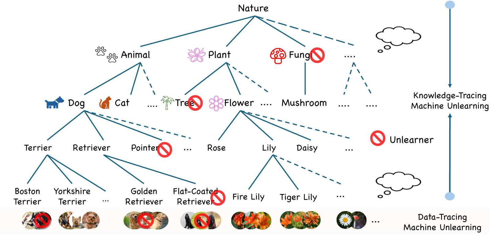
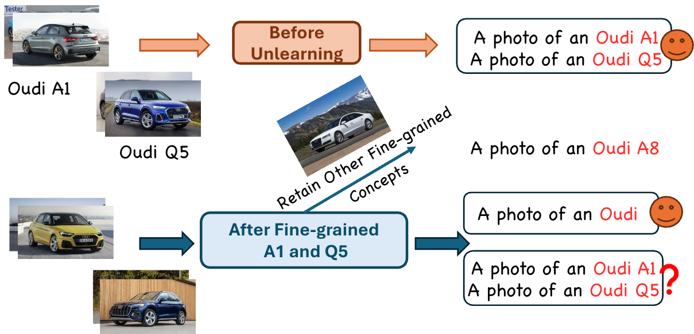
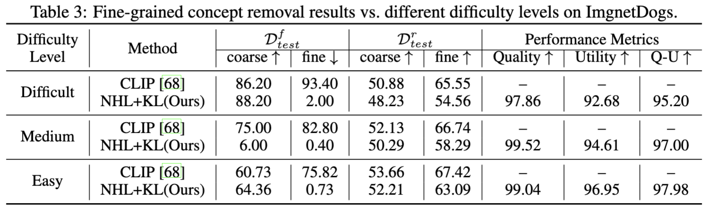
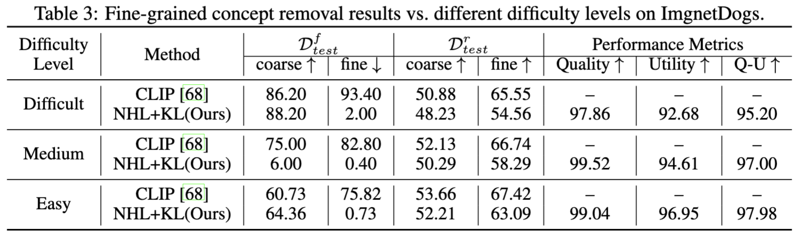

Abstract
Machine unlearning removes certain training data points and their influence on AI models (e.g. when a data owner revokes their decision to allow models to learn from the data). In this position paper, we propose to lift data-tracing machine unlearning to knowledge-tracing for foundation models (FMs). We support this position based on practical needs and insights from cognitive studies. Practically, tracing data cannot meet the diverse unlearning requests for FMs, which may be from regulators, enterprise users, product teams, etc., having no access to FMs' massive training data. Instead, it is convenient for these parties to issue an unlearning request about the knowledge or capability FMs (should not) possess. Cognitively, knowledge-tracing unlearning aligns with how the human brain forgets more closely than tracing individual training data points. Finally, we provide a concrete case study about a vision-language FM to illustrate how an unlearner might instantiate the knowledge-tracing machine unlearning paradigm.
Knowledge-Tracing Machine Unlearning
Machine unlearning removes certain training data points and their influence on AI models (e.g. when a data owner revokes their decision to allow models to learn from the data). In this position paper, we propose to lift data-tracing machine unlearning to knowledge-tracing for foundation models (FMs). We support this position based on practical needs and insights from cognitive studies. Practically, tracing data cannot meet the diverse unlearning requests for FMs, which may be from regulators, enterprise users, product teams, etc., having no access to FMs' massive training data. Instead, it is convenient for these parties to issue an unlearning request about the knowledge or capability FMs (should not) possess. Cognitively, knowledge-tracing unlearning aligns with how the human brain forgets more closely than tracing individual training data points. Finally, we provide a concrete case study about a vision-language FM to illustrate how an unlearner might instantiate the knowledge-tracing machine unlearning paradigm.
Lifting data to knowledge for FMU
-
Key differences between existing data-tracing MU and the advocated knowledge-tracing FMU.
-
Who might request FMU?
FMs are not exclusive to model developers; they are also the focal point of many other parties like data providers, product developers, legal and policy regulators, and researchers in the community
-
Knowledge-tracing FMU akin to human forgetting
We reinforce the significance of knowledge-tracing FMU using insights from cognitive and psychology studies about forgetting. Although forgetting is often perceived as harmful and frustrating in daily life, it is, in fact, an essential part of the human cognition process. It plays a vital role in knowledge acquisition, serving as a foundation for developing semantic and procedural understanding by enabling abstraction and automation. With limited cognitive capacity, humans excel at selectively forgetting at different levels, from instances to events to abstract knowledge, allowing them to prioritize relevant knowledge and enhance future learning.
Case Study
Following this work’s position, we provide a concrete case study about Contrastive Language-Image Pretraining (CLIP) to bridge the position with real-world applications and, in return, explore the position in depth, spanning multiple factors and perspectives. We envision that Oudi Inc., a car manufacturer and an enterprise user of the CLIP model, has retired their O1 sedan for some reason. Accordingly, Oudi's product team requests that the Oudi O1 concept be unlearned from CLIP. An unlearner is equipped with existing MU methods developed in the research community but realizes they all operate on the training data points. The unlearner cannot access CLIP's training data; instead, they assemble a set of exemplar Oudi O1 images as the proxy forgetting set \( \mathcal{D}^f \) (but no retention set for convenience).
-
Datasets for Unlearning.
We compile two fine-grained visual recognition datasets, {CompCars-S} and ImgnetDogs, of manmade and natural objects, respectively. CompCars-S is a subset of {CompCars}, a large-scale fine-grained car dataset with images from different viewpoints. It includes an extensive range of subcategories and a unique hierarchical structure. The subset we selected is relatively balanced and, more importantly, CLIP-friendly in that the CLIP model achieves high recognition accuracy. ImgnetDogs is a subset of ImageNet-1K, consisting of 99 fine-grained breeds of dogs worldwide. We randomly select 200 training images for each dog breed and use the corresponding validation subset in ImageNet as our test set. We use WordNet to find the coarse-grained labels for the dog breeds.
-
Main Results.
 
